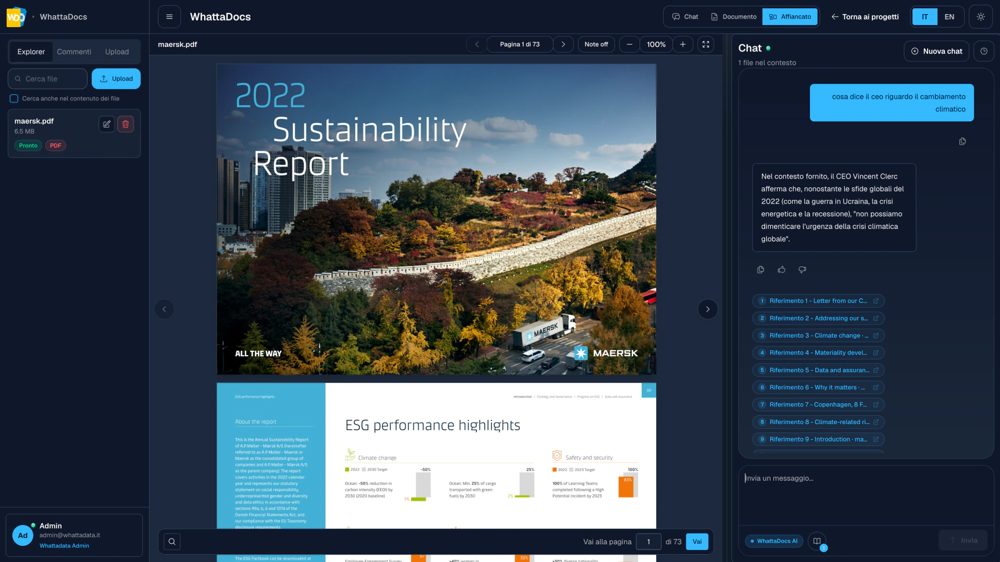

Internal knowledge, made usable.
Ask across policies, manuals and reports inside a defined project, with notes and sources kept together.
An AI document analysis workspace for questioning long documents, inspecting cited passages and deciding with the original source still in view.

Ask across policies, manuals and reports inside a defined project, with notes and sources kept together.
Inspect cited passages beside the answer, compare the evidence and continue from verified context.
Query the document scope that matters to the task.
Open the passages referenced by the answer.
Read the evidence in its original document context.
Record whether the source supports the answer, then continue from what you verified.
Organise related material and choose the active document context.
Receive concise answers with references to the evidence behind them.
Open cited passages and compare them with the generated answer.
Continue the inquiry without losing the document or evidence trail.
Tell us about the material your team works with and the decisions it needs to support.